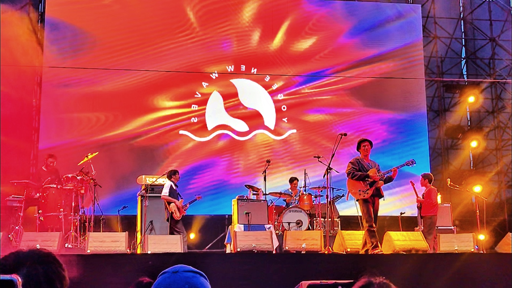

Why I design such a website?
Well... I'd say that this is a really hard question, I guess music is something I can really dive myself into. And I've been to so many lives back in shanghai, some are real good, some are just noise suffering my ears, and some are, well, mediocre(screw my English cuz I can't find better words :<). Among those experiences, I make a little list inside my head which are those bands I love the most. So back to the topic of why would I design such a 'fanpage' is because I want to share the pleasure I went to a live concert and found out "woah! The band blows my mind away!" to all of you guys who visit my website! Hahaha, that enough for the chitchat, let's get down to the topic.
What is indie rock to me?
When I was in primary school, my big brother(who's almost 30 now haha) give me a tape of a Chinese band called Tang Dynasty，it is called the first Chinese punk band ever. I can't really understand the things behind the lyrics at first, just feels "damn, that is so cool and different". This is the first time I ever listening to indie rock, while other kids are still kink to Micheal Jackson and Jay Chou.
As I getting older and older, I was more and more fancinating about the ironies and hidden sarcasms behind the lyrics. That's also the time period I starting to rioting about anything around me, adolescent period, so indie rocks with certain energetic raging spirits harmonized with my teenage soul.
Stepping into society gets me a lot burden, it also washes the raging youth inside me away. However, indie rock remains with me, when I go back from part-time or intern, holding my guitar, I feel like indie rock music is an entrance into my spiritual world of inner peace, those beat use to be a match to my pyre turns into a holy sanctuary of mine.
What is indie rock tho?
[Cited from Wikipedia]
Indie rock is a genre of rock music that originated in the United States and United Kingdom in the 1970s. Originally used to describe independent record labels, the term became associated with the music they produced and was initially used interchangeably with alternative rock. As grunge and punk revival bands in the US and Britpop bands in the UK broke into the mainstream in the 1990s, it came to be used to identify those acts that retained an outsider and underground perspective.By the end of the 1990s, indie rock developed several subgenres and related styles, including lo-fi, noise pop, emo, slowcore, post-rock, and math rock. In the 2000s, changes in the music industry and in music technology enabled a new wave of indie rock bands to achieve mainstream success.